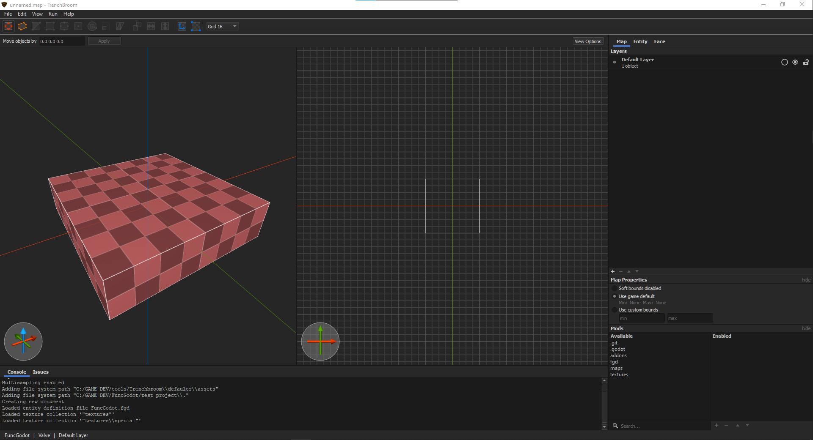
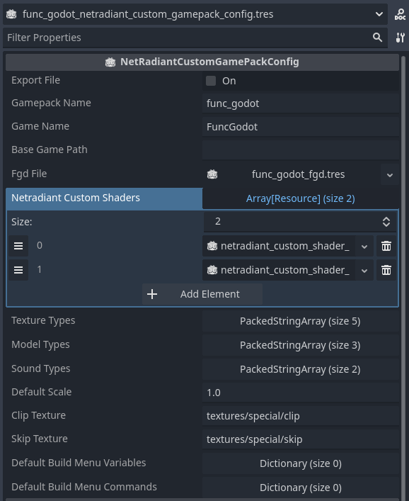

Map Editor Configuration
In order to map for Godot in your chosen map editor, you'll need to tell your map editor about your game. Each map editor has its own method of doing this. While FuncGodot can import any map file using the Quake Map format, official support is currently limited to only those that support the FGD format.
TrenchBroom

TrenchBroom is the most commonly recommended editor for FuncGodot, with multiple resources dedicated to configuring it. The primary configuration resource is the TrenchBroomGameConfig, with the TrenchBroomTag providing additional quality of life options in the editor.
You'll need a TrenchBroom Game Config resource in order to build and export a game configuration file for TrenchBroom. Let's take a look at the resource properties:

Most of these properties should be fairly obvious in their purpose. The FGD File should be your master FGD that contains all of your other base FGDs and entities. Entity Scale only scales the display models.
Brush Tags and Brushface Tags are strictly for TrenchBroom and have no effect in Godot. They can affect shortcut keys and have transparency effects applied to them, along with a few other features. FuncGodot comes with a few pre-made common tags. Feel free to use them in your own GameConfig resources.
Exporting the Game Config will use the directory set in your Local Configuration's Trenchbroom Game Config Folder. Consult the TrenchBroom Manual's Game Configuration documentation for more information. Once you've exported your Game Config, open up TrenchBroom and click New Map. You should now see your project in the games list.

You'll need to set the game path so that TrenchBroom can find your game's textures and any models if you created some for it. Open TrenchBroom's preferences and set your game's path to the one you set to Map Editor Game Path with the Local Configuration.

Now you should be ready to start mapping for Godot with TrenchBroom!

J.A.C.K.

Due to how games are configured in J.A.C.K., FuncGodot does not have any dedicated resources for it but the process is still fairly simple.
Make sure your Local Configuration's FGD Output Folder is pointing to your game's folder in J.A.C.K.'s game configuration folder. When you export an FGD file, FuncGodot will print in the Godot Output where it was saved to.

Once exported, you'll need to add your game to the Game Configurations list. Be sure to add your newly exported FGD as well.


Lastly you'll want to set your Base Game and Source Maps directories.

When it comes to textures, something to keep in mind is that you do not have to use the same exact texture files from your project. You can set up a WAD file for use with J.A.C.K. but then in your Godot project have loose texture files and premade materials. As long as the relative texture paths match without the file extensions, FuncGodot will be able to select the correct textures. That said, FuncGodot does support using WAD files with your maps. Use whichever method is right for your project.
And with that, you should be all set to start mapping in J.A.C.K.!

NetRadiant Custom
NetRadiant Custom receives FuncGodot support through both local configuration and dedicated resources. The primary configuration resource is the NetRadiantCustomGamepackConfig. The NetRadiantCustomShader resource offers additional options for texture display in the editor. It is highly recommended that you familiarize yourself with NetRadiant Custom before attempting to use it with FuncGodot.
You'll need a NetRadiant Custom Gamepack Config resource in order to build and export a gamepack configuration for NetRadiant Custom. Let's take a look at the resource properties:

The Gamepack Name is the most important one to get right. This will be the name of your gamepack folder, your base game folder, and your gamepack file. The Gamepack Name MUST be all lower case with NO special characters. Bad things can happen otherwise!
The Game Name and Fgd File properties should be fairly obvious. Make sure that the FGD file you choose is the master FGD that contains all of your other base FGDs and entities.
The Base Game Path is the folder containing your maps and textures, relative to your project directory without res://. Leave this blank to use your project's root directory. If you do use a separate mapping folder within your project make sure that you follow the same formatting as the Gamepack Name: all lower case and no special characters.
The Netradiant Custom Shaders array is a resource array for... NetRadiantCustomShader resources! These will be compiled into a .shader file included with the rest of your gamepack configuration. Simply empty the array if you don't wish to use any special shaders. This only affects NetRadiant Custom and has no effect on your Godot shaders and materials.
The Texture Types, Model Types, and Sound Types arrays are the lists of compatible file types that NetRadiant Custom will attempt to look for. It's generally fine to leave this as is and is offered for the sake of more advanced users.
The Default Scale sets the default texture scale.
The Skip and Clip Texture properties set the texture paths for a number of different shader settings in the gamepack, including caulk> and nodraw.
Exporting the Gamepack Config will use the directory set in your Local Configuration's NetRadiant Custom Gamepacks Folder. After you've built the gamepack, open up NetRadiant Custom.
Once open, you'll want to go to Edit > Preferences > Global > Game. If you did everything correctly so far you should find your game in the list. Select it and then select Okay. NetRadiant Custom will need to restart.

You'll be prompted to find your game's engine path. Use your Godot project's root folder.

Lastly, you'll want to go to Edit > Preferences > Settings > Brush, then change New map Brush Type to Valve 220.

Now you should be ready to start mapping for Godot with NetRadiant Custom!